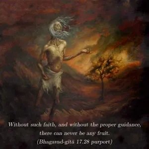

Anything done as sacrifice, charity or penance without faith in the Supreme, O son of Pṛthā, is impermanent. It is called asat and is useless both in this life and the next.

Anything done without the transcendental objective – whether it be sacrifice, charity or penance – is useless. Therefore in this verse it is declared that such activities are abominable. Everything should be done for the Supreme in Kṛṣṇa consciousness. Without such faith, and without the proper guidance, there can never be any fruit. In all the Vedic scriptures, faith in the Supreme is advised. In the pursuit of all Vedic instructions, the ultimate goal is the understanding of Kṛṣṇa. No one can obtain success without following this principle. Therefore, the best course is to work from the very beginning in Kṛṣṇa consciousness under the guidance of a bona fide spiritual master. That is the way to make everything successful.
In the conditional state, people are attracted to worshiping demigods, ghosts, or Yakṣas like Kuvera. The mode of goodness is better than the modes of passion and ignorance, but one who takes directly to Kṛṣṇa consciousness is transcendental to all three modes of material nature. Although there is a process of gradual elevation, if one, by the association of pure devotees, takes directly to Kṛṣṇa consciousness, that is the best way. And that is recommended in this chapter. To achieve success in this way, one must first find the proper spiritual master and receive training under his direction. Then one can achieve faith in the Supreme. When that faith matures, in course of time, it is called love of God. This love is the ultimate goal of the living entities. One should therefore take to Kṛṣṇa consciousness directly. That is the message of this Seventeenth Chapter.